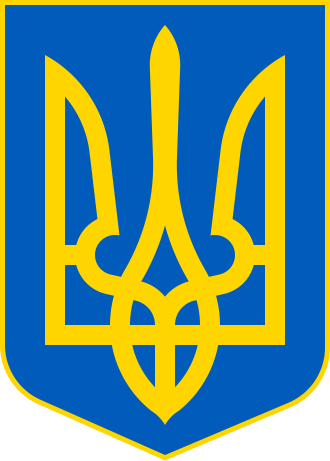

|
Відомі факти:
|
Україна - держава
, розташована у східній
Європі, на південно-західній частині Східноєвропейської рівнини.
-
Територія України лежить переважно в помірно-континентальній
області помірного кліматичного
поясу зі зростанням континентальности з північного заходу на південний схід. Південний берег
Криму виділяється в окремий регіон субтропічного
середземноморського клімату . В Українських
Карпатах і Кримських горах висота місцевості й експозиція
схилів зумовлюють вертикальну
зональність клімату .
-
Значення кольорів прапору:
-
Синій колір символізує ясне небо
-
Жовтий колір символізує стиглі пшеничні поля
-
Ось так виглядає герб України:

-
Сторінка на вікіпедії:
|